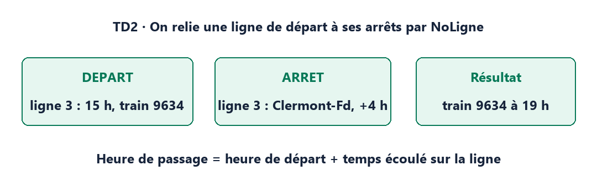

Comprendre le cours
1. Organiser les données en relations
Le schéma décrit les tables, les colonnes et leurs propriétés. L’instance est le contenu des tables à un moment donné. Une clé primaire identifie une ligne. Une clé étrangère relie une colonne ou un groupe de colonnes à une clé d’une autre table. Dans le TD des trains, plusieurs départs peuvent emprunter une même ligne et plusieurs arrêts appartiennent à cette ligne.
Évite de recopier partout la même information. Si le nom d’une entreprise apparaît avec sa ville dans chaque emploi, la ville peut devenir incohérente d’une ligne à l’autre. Une table des entreprises permet de stocker le fait au bon endroit et de joindre lorsque le résultat demande la ville.
2. Sélectionner, projeter et joindre
En SQL, FROM désigne la source, WHERE filtre les lignes et SELECT choisit les colonnes du résultat. DISTINCT retire les doublons du résultat projeté. Une jointure assemble deux lignes quand leur condition concorde. Vérifie que l’association exprime la bonne relation métier avant de t’occuper des colonnes à afficher.

3. Demander une existence ou une absence
EXISTS teste si une sous-requête produit au moins une ligne. Avec NOT EXISTS, on cherche une condition qui ne trouve aucune correspondance. Pour sélectionner les lignes ferroviaires qui ne passent jamais à Lyon, élimine toute ligne qui possède un arrêt à Lyon. Filtrer des arrêts différents de Lyon laisse passer des lignes qui possèdent aussi un arrêt dans cette ville.
Une question « pour toutes les pièces » se reformule en « il n’existe aucune pièce qui manque ». Une sous-requête imbriquée associe alors chaque fournisseur à chaque pièce qui contredirait la condition.
4. Regrouper et conserver les lignes sans correspondance
GROUP BY forme les groupes. Un agrégat comme COUNT, SUM ou AVG résume les lignes de chaque groupe. WHERE filtre les lignes avant regroupement. HAVING filtre les groupes après calcul.
Une LEFT JOIN garde les lignes de gauche sans correspondance et complète la partie droite avec NULL. COUNT(*) compte cette ligne. COUNT(colonne_droite) ignore ses NULL et donne zéro correspondance. Pour comparer explicitement à l’absence de valeur, utilise IS NULL.
5. Relire une requête avec l’algèbre relationnelle
La sélection σ garde les lignes qui respectent une condition. La projection π garde les attributs demandés et déduplique dans le modèle ensembliste. Le renommage ρ aide quand deux attributs porteraient le même nom. L’union et la différence demandent des relations compatibles. Le produit cartésien forme toutes les paires. Une jointure n’en garde que celles qui respectent un lien.
Pour le TP, SQLite garde la base dans un fichier. .tables liste les tables dans le client SQLite. .read lit les instructions SQL d’un fichier. Ces commandes commençant par un point appartiennent au client SQLite. Une instruction SELECT appartient au langage SQL.
Compter aussi la ligne qui n’a aucun arrêt associé
Imagine deux lignes de train, L1 avec deux arrêts et L2 sans arrêt enregistré. En partant des lignes, une jointure externe gauche conserve L2. Sur cette ligne du résultat, les colonnes de l’arrêt valent NULL, ce qui signifie « valeur absente ».
Après regroupement par ligne, COUNT(*) compte une ligne pour L2. COUNT(arret.id) compte seulement les identifiants renseignés et donne zéro. Pour choisir ce que tu comptes, écris à la main la ligne provisoire de L2.
Sigles et acronymes
- ACID · Atomicity, Consistency, Isolation, Durability
- Quatre propriétés courantes d’une transaction de base de données.
Exemple. Un virement est validé avec ses deux écritures ou annulé entièrement. - DBMS · Database Management System
- Logiciel qui gère le stockage et les requêtes d’une base.
Exemple. MySQL reçoit une requête SQL et renvoie les lignes demandées. - SQL · Structured Query Language
- Langage de requête pour une base relationnelle.
Exemple. SELECT permet de lire les titres des films d’une catégorie.
Du cours aux TD et TP
Questions TD & TP
TD2, ex. 1 question 4 · Donner les heures de passage à Clermont-Fd
Énoncé. Afficher les trains et heures de passage à Clermont-Fd, départs inclus.
SELECT d.NoTrain, d.Heure + a.Chrono AS Passage
FROM DEPART AS d
JOIN ARRET AS a ON a.NoLigne = d.NoLigne
WHERE a.Ville = 'Clermont-Fd'
ORDER BY Passage, d.NoTrain;Sur les lignes 0 et 1, Clermont est un départ et Chrono=0. Tu obtiens 9634 à 9 h et 3472 à 9 h. Sur la ligne 3, le départ est à 15 h et le trajet jusqu’à Clermont dure 4 h. Le train 9634 passe donc à 19 h. La présence du même train à deux horaires est cohérente.
TD2, ex. 3 · Trouver les lignes qui ne passent pas par Lyon
Énoncé. Donner les lignes sans arrêt à Lyon et expliquer pourquoi le filtre Ville != 'Lyon' donne un autre résultat.
SELECT DISTINCT a.NoLigne
FROM ARRET AS a
WHERE NOT EXISTS (
SELECT 1 FROM ARRET AS b
WHERE b.NoLigne = a.NoLigne AND b.Ville = 'Lyon'
);Le test intérieur concerne toute la ligne candidate. Dans l’instance, les lignes 0 et 3 sont les seules sans Lyon. La ligne 1 possède Clermont-Fd et Lyon : elle peut donc passer le mauvais filtre sur sa ligne Clermont-Fd.
TD4, questions 6 et 18 · Agréger et garder les valeurs zéro
Énoncé. Trouver les effectifs par ville du tableau des entreprises et donner, pour chaque employé, le nombre de personnes qu’il dirige.
- Pour le tableau fourni,
GROUP BY cityavecCOUNT(*)donne Paris 3, Clermont-Fd 2 et Rennes 1. - Pour les managers, commence par tous les employés. Rattache leurs lignes de management avec
LEFT JOINsurmanager_name=employee_name, groupe par employé et comptemanages.employee_name. - Dans un contre-exemple avec une personne sans collaborateur, la jointure gauche produit une ligne avec la partie droite vide.
COUNT(*)donnerait un. La colonne droite donne zéro.
TD5 et TD6 · Réunir deux ensembles puis exprimer « toutes les pièces »
Énoncé. Combiner les villes des relations P et V, puis donner les fournisseurs qui vendent toutes les pièces du catalogue.
- Projette la colonne ville séparément dans P et V. Les schémas deviennent compatibles. Fais l’union. On obtient Lyon, Paris et Clermont-Fd, avec Paris une seule fois.
- Pour les fournisseurs, construis tous les couples
(fid,pid)possibles. Soustrais les couples présents dans la projection de Catalogue. Les couples restants indiquent les pièces manquantes. - Projette les fournisseurs qui figurent parmi les couples manquants et retire-les de l’ensemble des fournisseurs. Vérifie que ton raisonnement garde un fournisseur qui ne manque d’aucune pièce.
TP1 · Initialiser SQLite et sélectionner les drames
Énoncé. Charger le script fourni dans la base locale films.db, afficher les tables, puis donner les titres des drames.
- Dans le dossier du TP, lance
sqlite3 films.db. Dans l’invite SQLite, exécute.read films.sqlavec le script fourni dans le sujet, puis.tables. Vérifie l’absence d’erreur à l’import. - La requête est
SELECT titre FROM Film WHERE genre='drame';si le jeu de données écrit le genre ainsi. Observe d’abord les libellés réels avecSELECT DISTINCT genre FROM Film;. - Ferme et rouvre la même base. Les tables doivent encore être là. Si la base est vide, vérifie le chemin du fichier utilisé avant de recréer les tables.
TD1, exercice 2 · Distinguer schéma, relation et nuplet
Énoncé reformulé. Définir ces trois termes du modèle relationnel en utilisant la bibliothèque d’articles du sujet.
- Le schéma ARTICLE(IdArticle, Titre, Annee) décrit les attributs attendus. La relation correspond aux n-uplets qui respectent ce schéma à un instant donné. Un nuplet est une seule ligne, par exemple (12, « Réseaux optiques », 2025), donnée ici pour illustrer.
- Pourquoi isoler ECRIT(IdPers, Ordre, IdArticle) ? Une personne peut participer à plusieurs articles et avoir un rang différent pour chacun. Le rang dépend du couple auteur–article. Il se place donc dans ECRIT.
- Pour retrouver le premier auteur d’un article, repère son identifiant dans ECRIT, garde le rang 1 puis utilise IdPers dans AUTEUR. Chaque passage entre relations répond à une question précise.